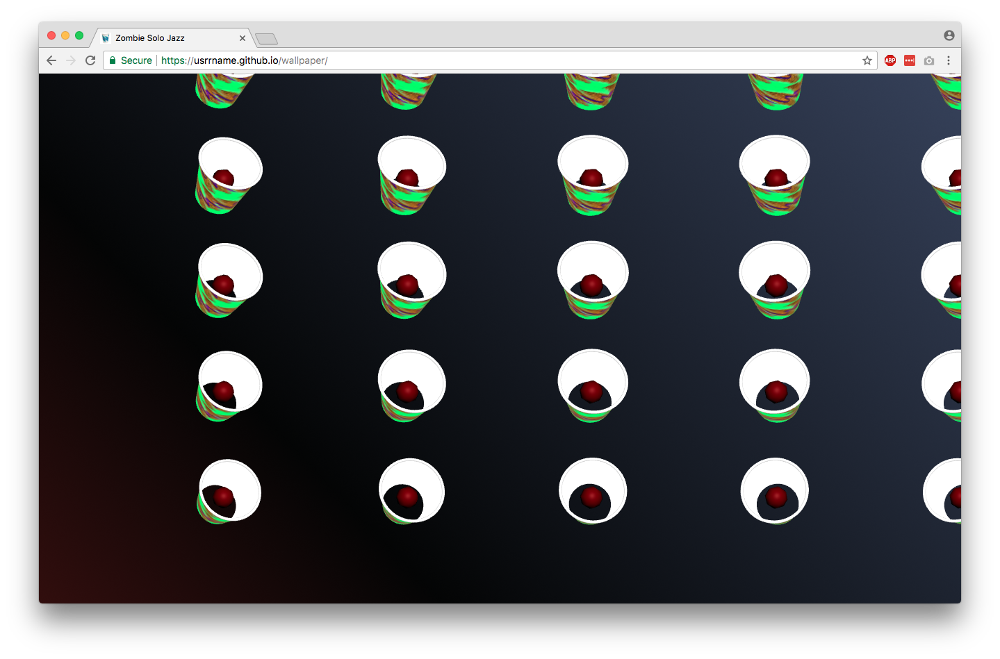
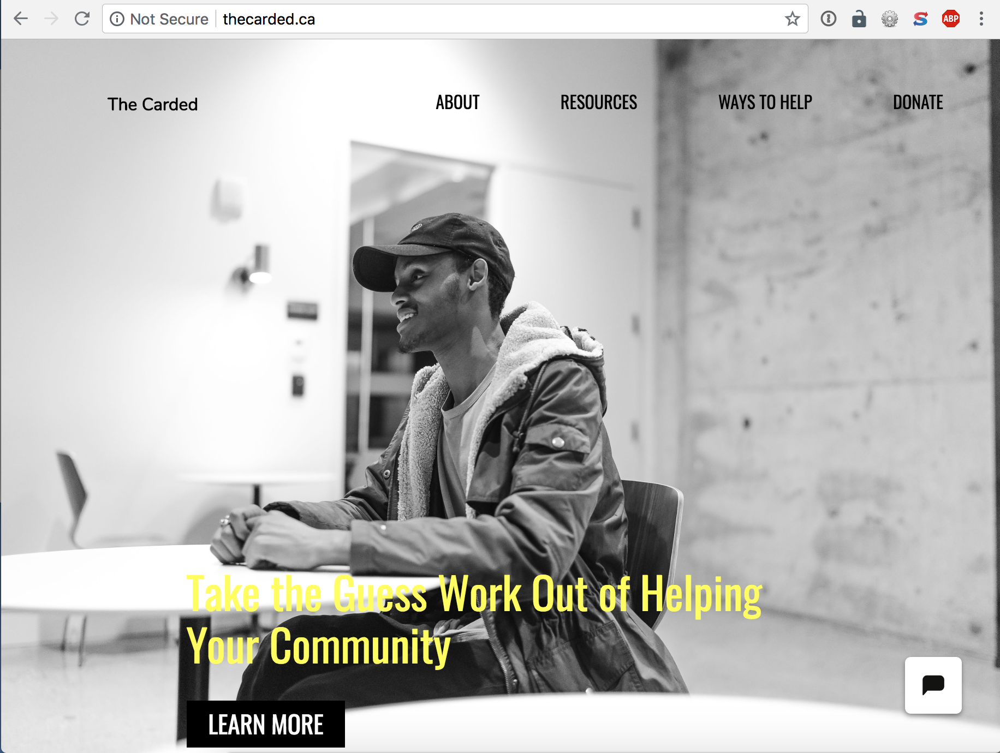
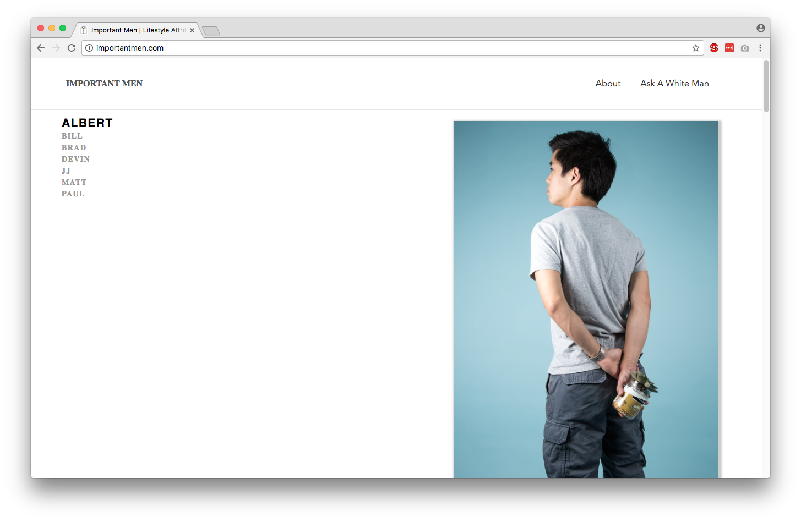
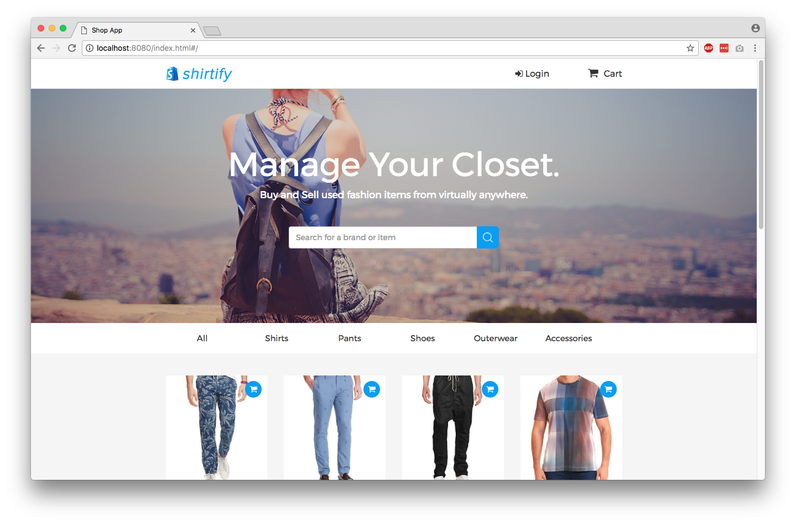
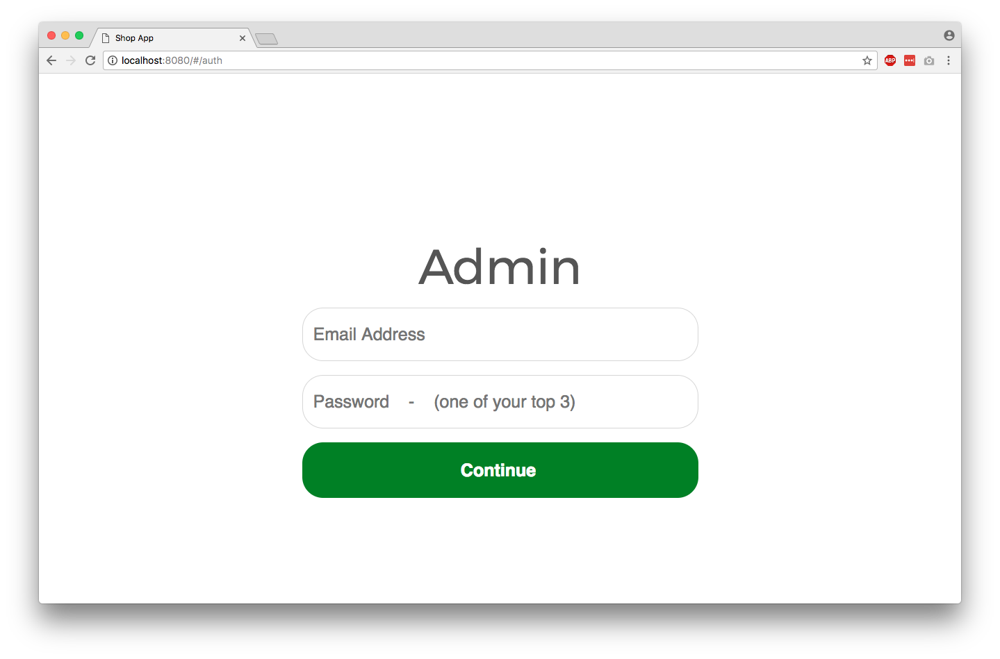
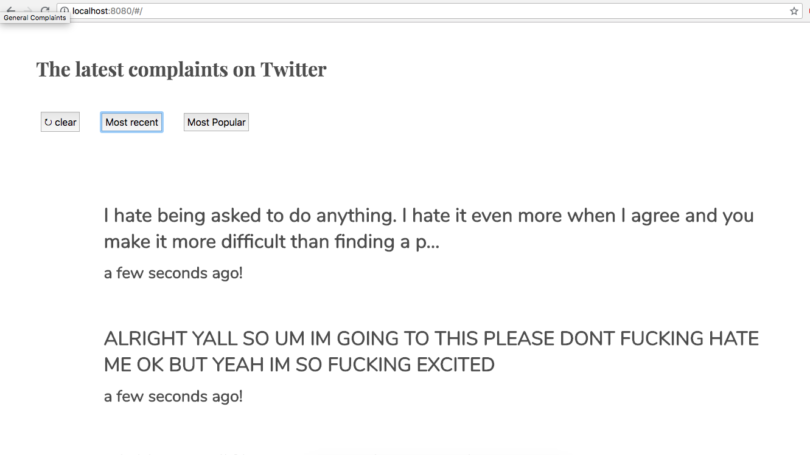
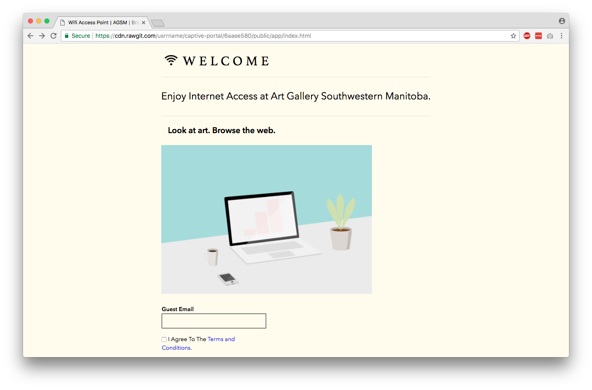
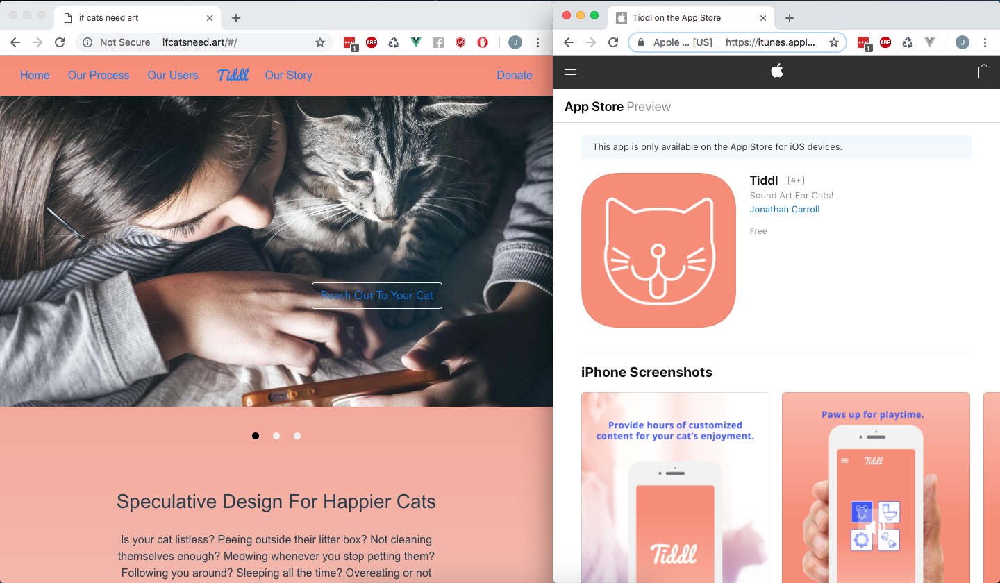

Work

Zombie Solo Jazz, web page made with 3JS and Javascript. An animated wallpaper of randomized rotating party cups
with rotating red ball inside, array vision camera snippet, and an identical crack on each rim, for New Forms Festival
in Vancouver

The Carded. Landing page for a Civic Tech project. HTML and CSS, a single-page app made with AJAX and vanilla js.

Important Men looks like a lifestyle
website and modelling portfolio. Commissioned by IOTA and Canada Council for the
Arts. Inspired by her recent work in digital advertising and different online initiatives to reform "toxic
masculinity",
I wanted to create my own series of male portraiture by photographing the important masculine influences in my
life.
Built with Node, Express, MongoDB and sendgrid API for sending an email with form input to the "agony aunty"
Matthew's inbox. Email includes form which allows Matthew to respond. Both question and answer are stored on
MLab/MongoDB's sandbox. Backend on Heroku (free tier), front end on github pages. Some attempt at ES6.
I blogged about what I learned here.


Shirtify, a parody menswear site
built with Angular 1.x, MongoDB, photo upload, admin side, login with authentication.

General Complaints uses
Twitter API and some language filtering to return the most outraged and whiney popular tweets from the past day or
the last seven days. It was made with Angular 1.x, Moment.JS, Express and Node.

S.C.U.M (Society of
Cutting Up Misogynists) is a series of hotspot landing pages that contains a rewritten version of a dated radical
feminist manifesto, cloaked under lengthy terms and conditions and a choose-your-own-ending webpage quoting The
Matrix. Several versions made for testing with PFsense. TL;DR: wifi hotspot pages that require users to read long
terms and conditions and an offensively radical manifesto before offering users free internet service. Installation
at Art Gallery of Southwestern Manitoba in Brandon, MB sponsorted by Juggernaut Computers. The captive portal was
created using PfSense, javascript, jquery, html and css/tachyons. The original goal was to run a wifi hotspot for
13 km in downtown Brandon using UNIFI's hotspot extender. I'm not sure how far it really went.

If Cats Need Art, web page made
with Vue-Cli and webpack, Express server endpoint sending JSON from Google Sheets, deployed on Nearly Free Speech. The site was made with the intention of including future design projects related to UX for domestic cats.